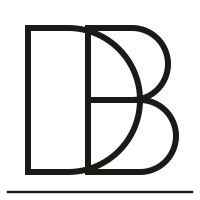
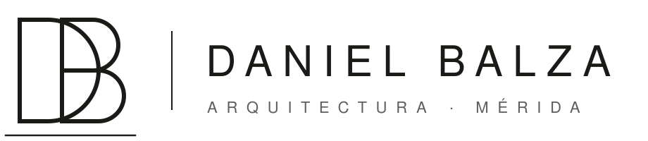

Una marca sobria y monumental, inspirada en la Mérida andina: la piedra, la madera, la niebla y el cobre de los techos al atardecer.
La D y la B comparten estructura: se entrelazan como dos volúmenes que se apoyan, trazados con línea constante como en un plano. La línea inferior es el horizonte — el terreno sobre el que todo se construye. La D evoca un arco/portal; la B, dos niveles apilados.




Títulos en mayúscula, peso 300, tracking negativo. Textos en peso 350.
Para una palabra emocional dentro de un título, siempre en cobre.
Pausado, seguro y cercano. Frases cortas, imágenes amplias, mucho aire. Se habla de luz, paisaje y materia, no de “soluciones integrales”.